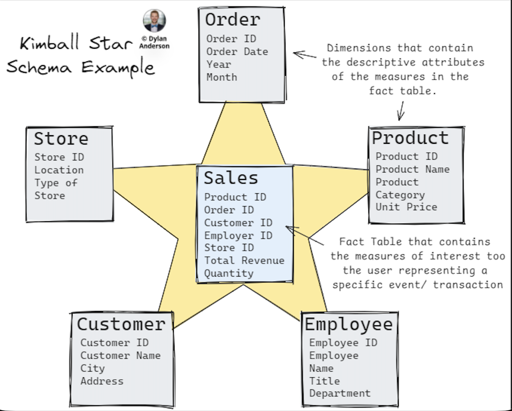
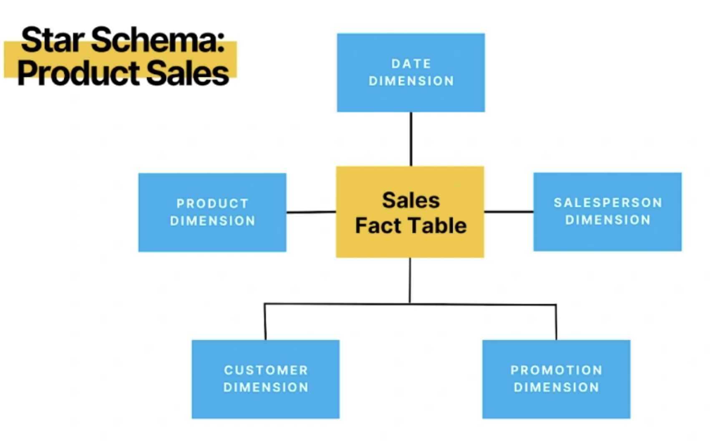

---
---
{% include menu.html title="Kimball Dimensional Architecture" %}
Kimball Data Architecture (Kimball Dimensional Architecture)
1. Overview
Kimball Data Architecture is a bottom-up data warehouse design approach focused on delivering
business-friendly analytics. It organizes data using dimensional modeling,
making it optimized for reporting, dashboards, and BI tools.

2. Core Principles
- Business-process centric
- Bottom-up development
- Dimensional modeling (facts and dimensions)
- Incremental delivery
- High query performance
3. Main Components
3.1 Source Systems
- Operational databases (ERP, CRM, billing)
- Logs and event streams
- APIs and flat files
- External data sources
3.2 ETL / ELT Layer
- Extract data from source systems
- Transform data using business rules
- Load data into dimensional tables
- Data quality checks
- Surrogate key generation
- Slowly Changing Dimensions (SCD)

3.3 Dimensional Data Warehouse
The core of Kimball architecture is the dimensional warehouse,
built using star schemas.
4. Dimensional Modeling
4.1 Fact Tables
- Store measurable numeric data
- Represent a business process
- Defined at a specific grain
- Contain foreign keys to dimensions
Examples:
- sales_amount
- quantity_sold
- revenue
4.2 Dimension Tables
- Store descriptive attributes
- Denormalized and human-readable
- Provide context for facts
Examples:
- Customer
- Product
- Date
- Location

5. Star Schema
- One central fact table
- Multiple surrounding dimension tables
- Simple joins
- High-performance queries
6. Conformed Dimensions
- Shared dimensions used across multiple fact tables
- Ensure consistent metrics enterprise-wide
- Enable cross-functional reporting
Example:
- The same Date and Customer dimensions used by Sales, Inventory, and Finance
7. Data Marts
In Kimball architecture, data marts are not silos.
They are logical subsets of the dimensional warehouse.
- Sales data mart
- Inventory data mart
- Finance data mart
8. Bus Architecture
- Defines standard business processes
- Maps processes to shared dimensions
- Ensures architectural consistency

9. Strengths
- Easy for business users to understand
- Excellent BI tool compatibility
- High performance on analytical workloads
- Incremental and agile development
10. Limitations
- Not designed for OLTP workloads
- Requires strong governance of dimensions
- Complex transformations live outside the model
11. One-Sentence Summary
Kimball Data Architecture organizes enterprise data into fact and dimension tables to deliver fast,
consistent, and business-friendly analytics.
References:
Fact vs Dimension Tables
{% include footer.html %}